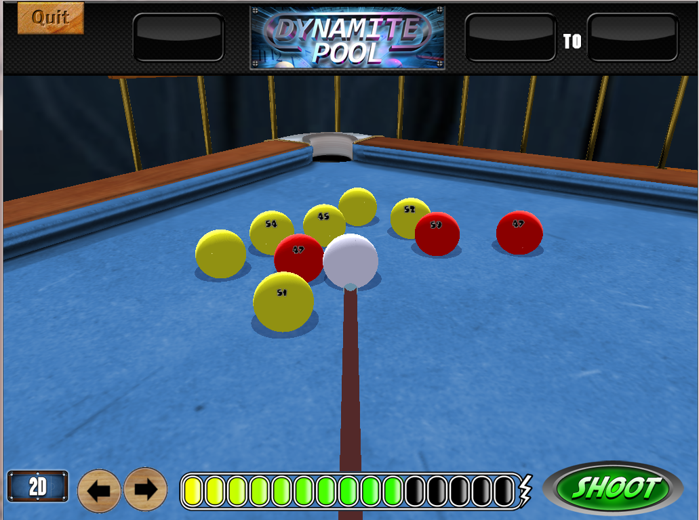
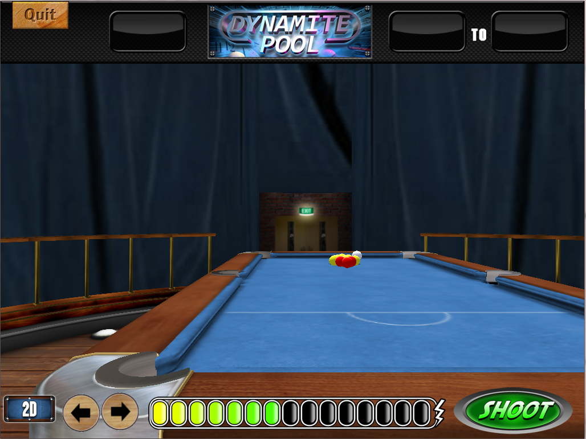

Dynamite Pool

Game screen

Simulation
I chose to use the open source Newton Game Dynamics physics system, although I considered using Bullet physics during development of this game having been used in previous games.
This project required a fair bit of experimentation with camera systems, control of the cue (problems were encountered with touch screen input) and with the feel of the physics simulation. Bonuses allowed alteration of some of these physics parameters such as speed and material properties. Compound shapes were used for speed over convex hulls.
Again programming was done by myself, with one artist doing the modelling and graphics. Design was more of a team effort.
<< Back